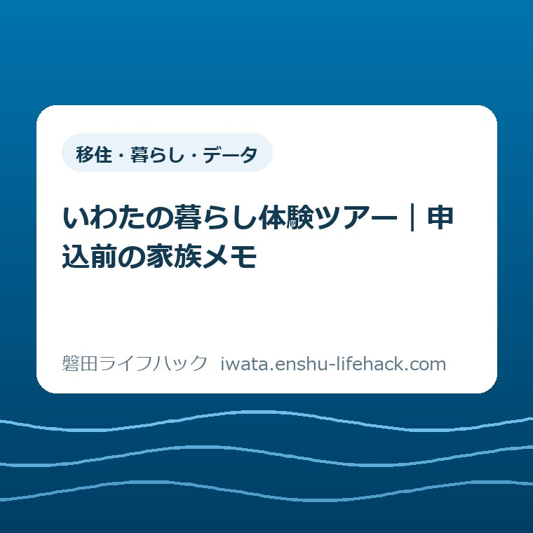
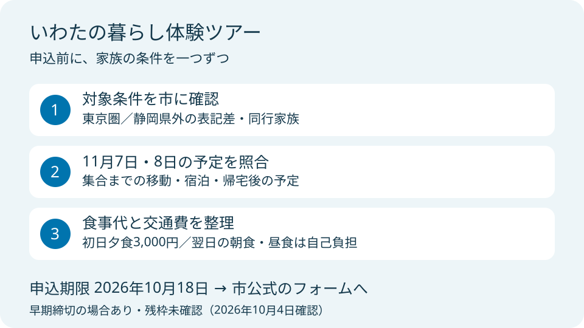
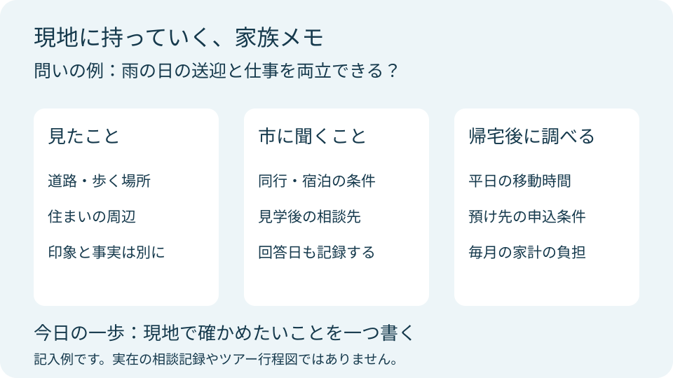

移住・暮らし・データ
いわたの暮らし体験ツアー｜申込前の家族メモ

この記事の要点
Q. いわたの暮らし体験ツアー、申込みの前に家族で何を決めておく？
A. いわたの暮らし体験ツアーは2026年11月7～8日、申込期限は10月18日です。先着20名程度で早期締切もあります。参加条件は市に確認し、参加費以外の食事代と家族の予定を整理してください。今日は現地で確かめたいことを一つ書けば十分です。申込みは磐田市公式の開催案内から進めます。
移住先を探すだけで、家族はもう働いている
移住体験ツアーの参加条件や費用の扱いは、居住地や家族の個別条件によって確認が必要です。東京圏で暮らしながら磐田を調べるご家族は、仕事の合間に住まいを検索し、学校の予定を見て、交通費を計算しています。申込画面を開く前から、すでに時間と手間を払っています。
私は大石浩之（磐田市／不動産業）です。ここでは市の案内を、家族の二日間を組み立てる言葉に置き換えます。転入届の手順や市全体の紹介ではなく、2026年11月のツアーに申し込む前の準備に絞ります。参加を決めるための材料と、現地で持ち帰る質問を分けて考えます。
磐田市の「いわたの暮らし体験ツアー」は、2026年10月2日更新の案内で募集されています。本記事は10月4日に内容を確認しました。家族全員の移住への気持ちがそろっていなくても、まず予定と確認事項を見える形にする、というのが私の提案です。
今日の作業を、申込完了まで広げなくて構いません。「現地で確かめたいこと」を一つ書く。それが今回の一歩です。参加条件を満たすか不明な点があれば、市の回答を得てから判断します。記事だけで参加資格があると決めないでください。
申込条件と期限は、同じページの中でも分けて読む
磐田市の開催案内では、開催日は2026年11月7日（土曜）から8日（日曜）、申込期限は10月18日（日曜）です。募集は先着20名程度で、最少催行人数は5名。期限より早く締め切る場合があります。残枠は未確認なので、20名という募集人数を空き人数として読まないようにします。
対象地域には、確認を要する表記差があります。案内冒頭は東京圏、具体的には東京都・神奈川県・埼玉県・千葉県の在住者を対象としています。一方、対象欄には静岡県外に住み、磐田市への移住や二拠点生活に関心がある方と記載されています。
私は、広いほうの表記だけを採って「県外なら誰でも参加可能」とは案内できません。東京圏に住む読者も、同行家族が別の地域に住んでいる場合は、その居住地を添えて確認すると話が具体的になります。募集の文面を家庭の事情に当てはめる最後の判断は、市の移住相談窓口に委ねます。
申込みは磐田市「いわたの暮らし体験ツアー」の申込フォームから進めます。検索結果の古い案内を使わず、開催年と日付を確認してください。入力欄や残枠が変わる可能性があるため、この記事ではフォームの全項目や受付中の保証は掲載しません。
家族メモには、申込む人の名前とは別に「市に聞く条件」を一行残しておくと便利です。子どもの同行、食事の扱い、宿泊時の配慮など、気になる点をまとめます。回答を得たら、回答日と内容も同じ場所に記録します。誰か一人だけが知っている状態を減らせます。

二日間の予定は、集合と帰宅を両端に置く
いわたの暮らし体験ツアーは一泊二日の予定です。市の案内では、11月7日の集合は公共交通機関で来る方がJR磐田駅に11時15分、車で来る方が磐田市役所に11時25分。11月8日は14時30分の解散予定です。集合場所などの詳細は参加者決定後のメールで案内されます。
家族のカレンダーには、ツアーの開始と終了だけでなく、自宅を出る時刻と帰宅の見込みも入れます。東京圏から移動する日は、駅までの送迎、乗換え、子どもの休憩も必要になるかもしれません。列車や道路の所要時間は家庭ごとに違うので、この記事の例で固定しないほうが確実です。
私は、11月7日と8日の欄の隣に「動かせない予定」を書く方法を勧めます。勤務、学校行事、介護の引継ぎ、ペットの世話などです。予定がぶつかったら、参加者を減らせるか、途中参加が可能かを勝手に決めず、市へ相談します。全行程参加の扱いも申込時に確認したい事項です。
宿泊先として案内されているのは、竜洋海洋公園オートキャンプ場のコテージです。自分で宿泊施設を予約する前に、主催者の案内を確認してください。部屋割り、寝具、幼児の過ごし方など、家庭ごとの疑問は宿泊場所の名前だけでは解決しません。
磐田を一つの駅の周辺だけで捉えないためには、市役所と四つの支所から暮らしの距離を考える記事も下準備になります。今回のツアーの訪問先や移動順を追加で保証するものではありません。住みたい場所と毎日通う場所を別に考えるための読み物です。
参加費無料でも、家族の出費はゼロとは限らない
磐田市の費用欄には参加費無料とありますが、初日の夕食はBBQ代3,000円、2日目の朝食と昼食は自己負担と記されています。「無料」の一語だけで週末の家計を組むと、食事代の欄が抜けます。無料で参加できることと、家族の財布から出る金額がないことは別です。
私は家族の予算を、金額が確認できた食事、まだ金額が決まらない食事、集合場所までの往復交通に分けます。子どものBBQ代がどうなるか、3,000円をどの参加者に数えるかは確認事項として残します。人数を掛けた総額だけを先に確定すると、確認していない条件まで決めたことになります。
買い物代や飲み物なども、必要な家庭は予算欄を別に持つと見通しが立ちます。これは主催者が指定した追加料金ではなく、私からの家計整理の提案です。予定外の支出をすべて排除するより、いくらまでなら無理がないかを家族で共有しておくほうが役立ちます。
市の注意事項では、集合場所までの往復運賃に関するキャンセル料などは支払えないとしています。参加決定後の自己都合によるキャンセルも、実費相当の負担が生じる場合があります。天候などで内容変更や中止もあり得るので、参加費が無料でも取消条件は読んでおく必要があります。
新幹線移動費の2割ポイント還元については、申込み後に案内すると記載されています。対象になる購入方法や条件を確認する前に、交通費から一律に2割を引いた予算にしないでください。現金の支払額とポイントで戻る額を分け、適用条件は届いた案内で確認します。
良い点は、住居見学と相談を一度の訪問につなげられること
磐田市の行程には、住居見学と個別移住相談が組み込まれています。私は、家を見たときに生まれた疑問を、同じ訪問の中で相談へ持っていける点を評価します。写真だけでは質問しにくいことも、暮らす場面を想像してからなら言葉にしやすくなります。
初日には海老芋の収穫体験、市内見学、先輩移住者との地域交流が予定されています。私は、家の間取りだけを比較する移住先探しから、食事や人との距離へ目を向けるきっかけになると考えます。参加した全員が同じ感想になるとは限りませんが、家族で話す材料を増やせる構成です。
二日目には買い物や自由時間も案内されています。私なら、特別な週末として楽しむ時間と、生活用品をどこで買うか考える時間を分けます。すべてを調査にしてしまうと子どもも大人も疲れます。確認する質問を一つに絞れば、体験を楽しむ余裕も残しやすくなります。
子育て中の家庭なら、磐田市の図書館6施設を使い分ける記事も、普段の休日を考える手がかりになります。図書館が今回の訪問先と決まっている、という意味ではありません。ツアーの外でも調べられることを先に分けておくためのリンクです。
注文したい点は、家族が確認し直す箇所を減らすこと
いわたの暮らし体験ツアーの案内について、私が改善を望むのは対象地域の表記をそろえることです。東京圏と静岡県外では読める範囲が違います。応募できるかを調べる人にとっては、最初の入口で判断が止まる違いです。どちらかを読者の推測で補う形は避けたいと思います。
家族での参加を検討する立場からは、子どもの食事代や宿泊時の扱いも、確認先と一緒に見えると助かります。ただし、公式ページに細目がないから受け入れられない、とまでは言えません。案内で読み取れることと、担当者に聞いて初めて分かることを区別する必要があります。
これは担当職員個人への注文ではありません。説明が一か所に集まれば、家族の聞き直しと窓口の回答の双方を減らせる、という私の考えです。参加を検討する人が平日に電話できる時間は限られます。問合せ前のメモを一枚にするだけでも、聞き漏らしを減らせます。
持ち物は、市の案内では収穫体験に適した汚れてもよい服装と靴、飲み物、防寒着です。アレルギー、長時間の移動、歩行や体調に関する配慮が必要なら、対応を推測せず事前に相談します。家庭の事情をすべて本文で説明する必要はなく、参加に関わる事項を主催者に直接伝える形で十分です。
現地の質問は「住めそう」から生活の一場面へ絞る
住居見学の家族メモは、希望条件を全部並べるより、毎日起こる一場面から作る方法を私は勧めます。例えば「雨の日、子どもを送り、その後に仕事へ向かう順番を組めるか」です。これは架空の検討例であり、特定の家族から受けた相談を紹介しているものではありません。
候補の住まいが見つかったら、駅までの距離だけでなく、誰がどの時間帯に移動するかを書きます。車を使える人が一人の日、子どもの迎えが遅れる日など、普段の条件を一つ添えます。二日間で全時間帯の交通を確認することはできないため、現地で見たことと帰宅後に調べることを分けます。
子どもの預け先を考える家庭は、見学した家から近い施設があるだけで入園できるとは判断しません。入園の条件や申込時期は別に確かめる必要があります。磐田市の保育園申込み準備の記事を使い、ツアーで聞く質問と入園手続きの確認を切り分けてください。
住居見学では、見られる範囲と、契約の検討に必要な資料の範囲も違います。私は「この住まいが候補になったら、次に何の資料を確認するか」を一問加えたいと考えます。賃料や取得費だけでなく、毎月の負担や手入れ、移動の条件を帰宅後に比べられる形にします。

メモの書き方は「見たこと」「聞いたこと」「未確認」の三欄にします。道路を歩いた印象と、担当者から聞いた説明を混ぜないためです。距離を実測していなければ、徒歩何分と断定せず未確認に置きます。帰宅後に夫婦で読んでも、何を根拠に話しているか分かる記録になります。
先輩移住者の話も、その方の仕事や家族構成のもとでの経験です。私は、良かった点を聞いた後に「どんな条件で、その暮らし方ができているか」を聞くと役立つと考えます。同じ磐田市でも、自分の家族に当てはまるかは別に検討します。一つの体験を市全体の答えにはしません。
対案・結論——今日は確かめたいことを一つ書く
いわたの暮らし体験ツアーの申込前に今日進める作業は、家族のメモに「現地で確かめたいこと」を一つ書くことです。質問が書けたら、参加条件、二日間の予定、自己負担の順で確認を進めます。最初から全項目を完成させなくても、家族が何を知りたいのかが見えれば前進です。
申込みへ進む際は、公式案内を開き直し、対象と受付状況を確認します。フォームに送信した内容や届いた連絡は、家族で確認できる方法で保管すると安心です。参加者決定後のメールには費用の支払や集合場所などの詳細が案内されるので、申込みの段階のメモを最終案内で更新します。
11月7～8日の参加が難しい家庭には、磐田市のオンライン移住相談という別の入口があります。2024年8月13日更新の案内では、希望日の1週間以上前に電話かメールで申し込む方法です。ツアーへの申込みとは別の手続きなので、混同しないようにします。
オンライン移住相談の案内では、申込み後に内容確認と日程調整を行います。希望日に必ず相談できるという意味ではありません。ツアー申込期限の直前に相談を入れようとせず、聞きたい条件があるなら余裕を持って連絡します。市の移住相談窓口は0538-37-4805です。
大石の視点——無料より、家族の二日間が回るかを見る
私は、参加費が無料だから申し込む、という順番にはしたくありません。家族の二日間が回るかを先に見る。これが私の判断です。勤務を動かす人、荷物を用意する人、帰宅後の子どもの支度をする人の手間も、移住先を探すために払っている費用の一部だと考えます。
私にも迷う点があります。家族の疑問が十分にそろうまで待つと、先着の募集に間に合わないかもしれません。一方、枠を気にして条件の確認を飛ばせば、あとで家族の予定を組み直すことになります。だから、質問を一つに絞るところから始め、参加に関わる不明点は市へ聞く順番を勧めます。
現地で「想像と違った」と分かることも、移住先探しの成果だと私は考えます。家族で意見が分かれたら、賛否を急いでそろえるより、どの生活場面で違いが出たかを書きます。家を選ぶ前に家族の条件が一つ見える。そのための二日間として、このツアーを検討してほしいと思います。
よくある質問
いわたの暮らし体験ツアーの申込み、費用、対象地域について、2026年10月4日に確認した案内をもとに整理します。
申込みはいつまで、どこからできますか？
2026年のいわたの暮らし体験ツアーは10月18日（日曜）が申込期限です。磐田市公式の開催案内にある申込フォームから進めます。募集は先着20名程度で、期限前に締め切る場合もあります。2026年10月4日時点の残枠は未確認です。申込送信だけで参加決定と考えず、その後の連絡も確認してください。
参加費無料なら、家族の出費はありませんか？
参加費は無料ですが、初日夕食のBBQ代3,000円と2日目の朝食・昼食は自己負担と案内されています。集合場所への往復交通費も含め、家族の予算を別に見積もる必要があります。子どもの食事料金や人数の数え方は市に確認してください。中止や自己都合のキャンセルについても公式の注意事項を読んでから交通を手配します。
東京圏以外に住んでいても参加できますか？
公式案内の冒頭は東京圏の東京都・神奈川県・埼玉県・千葉県在住者を対象とし、対象欄は静岡県外在住で磐田市への移住・二拠点生活に関心がある方としています。表記が異なるため、東京圏以外からの参加可否はこの記事では断定できません。現在の居住地と同行家族を伝え、市の移住相談窓口に確認してください。
参考にした公式情報
- いわたの暮らし体験ツアー／磐田市（2026年10月2日更新、2026年10月4日確認）
- オンライン移住相談／磐田市（2024年8月13日更新、2026年10月4日確認）
最終確認日：2026-10-04 ／ 本記事は公表情報と執筆者の見解を分けて記載しています。制度・数値・公開状況は変更される場合があるため、最新情報は磐田市公式ページでご確認ください。